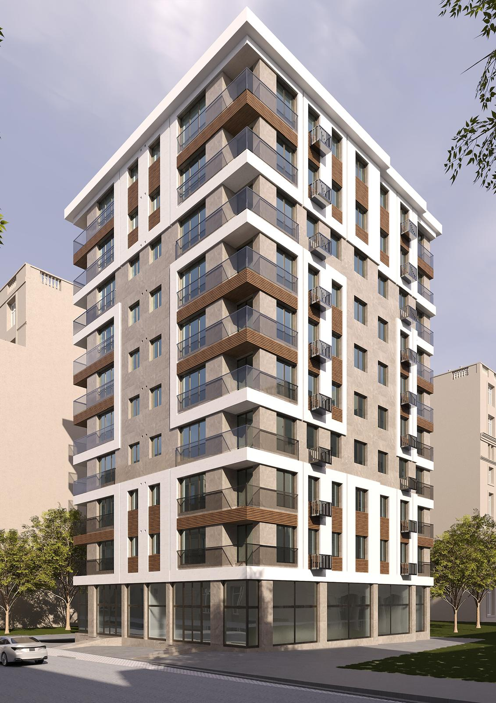

Özel Yatırım Fırsatı · Kadıköy, İstanbul
Göztepe’de Yeni Bir İmza
Tüm resmi onayları tamamlanmış, konut ve ticari alanlardan oluşan seçkin bir geliştirme projesi. Doğrudan satın alma veya arsa sahibiyle proje ortaklığına açık.
İMZA GÖZTEPE · Özel Proje Geliştirme Fırsatı
Aşağı kaydır ↓
Projeye Genel Bakış
İMZA GÖZTEPE; konut, ticari alan, kapalı otopark ve tarihi köşk rekonstrüksiyonunu tek bir geliştirme vizyonunda bir araya getiriyor.
Neden İMZA GÖZTEPE?
Onayları Tamamlanmış Proje
Belediye, mimari proje, tarihi köşk, tescilli ağaçlar ve Koruma Kurulu süreçleri tamamlanmış bir yatırım fırsatı.
Tanımlanmış Mimari Vizyon
Projenin ölçeği, konut dağılımı, ticari alanları, otopark çözümü ve mimari karakteri belirlenmiştir.
Tek Malik, Doğrudan Görüşme
Yatırımcılar, mülkün tek sahibi ve karar vericisiyle aracısız olarak doğrudan müzakere eder.
Göztepe’de Sınırlı Arsa Arzı
Yerleşik konut dokusu içinde, yeni geliştirme imkânlarının son derece sınırlı olduğu güçlü bir lokasyon.
Esnek Yatırım Modeli
Doğrudan satın alma veya arsa sahibiyle yapılandırılmış proje ortaklığı seçenekleri değerlendirilebilir.
Göztepe İçin Tasarlanmış Çağdaş Mimari
Güncel mimari proje; geniş cam yüzeyleri, çevresel balkonları, sıcak cephe detayları ve güçlü köşe etkisiyle çağdaş bir konut yapısı ortaya koymaktadır.
Proje, 11 katlı üst yapı, iki katlı kapalı otopark, 36 konut, iki ticari birim ve tarihi köşkün rekonstrüksiyonundan oluşmaktadır.

11 katlı üst yapı
2 kapalı otopark katı
36 konut
2 ticari birim
Tarihi köşk rekonstrüksiyonu
Görseller onaylı mimari proje doğrultusunda hazırlanmıştır. Uygulamada resmi ruhsat, proje ve teknik dokümanlar esas alınacaktır.
Cephe detayı
Köşe kurgusu
Tarihi köşk rekonstrüksiyonu
Pazar Talebine Göre Dengeli Konut Dağılımı
Projenin konut programı, aile yaşamına yönelik geniş 3+1 daireler ile daha kompakt 2+1 daireleri dengeli biçimde bir araya getirir.
3+1 Konutlar
18 Daire
- A Tipi
- Net alan: 93,79 m²
- Brüt alan: 123,55 m²
- Emsal alanı: 91,53 m²
- Aile yaşamına uygun geniş planlama
2+1 Konutlar
18 Daire
- B1 · 9 daire
- Net alan: 67,92 m²
- Brüt alan: 88,00 m²
- Emsal alanı: 64,19 m²
- B2 · 9 daire
- Net alan: 66,59 m²
- Brüt alan: 86,12 m²
- Emsal alanı: 62,81 m²
Konutun Ötesinde Ek Değer
Ticari Birim 1
- Emsal alanı
- 142,50 m²
- Net alan
- 156,65 m²
- Depo alanı
- 20,00 m²
Ticari Birim 2
- Emsal alanı
- 148,50 m²
- Net alan
- 163,74 m²
- Depo alanı
- 26,40 m²
Tarihi Köşk
- Emsal alanı: 300 m²
- Onaylı rekonstrüksiyon
- Projeye özgün bir mimari ve kültürel kimlik kazandıran yapı
İki ticari birim toplam yaklaşık 320,39 m² net kullanım alanı ve 46,40 m² depo alanı sunmaktadır.
Arsadaki tarihi köşkün rekonstrüksiyonu, tescilli ağaçların korunması ve çağdaş yapıyla birlikte ele alınması, İMZA GÖZTEPE’yi standart yeni yapı projelerinden ayrıştıran özgün bir değer oluşturmaktadır.
Proje Teknik Bilgileri
- Proje adı
- İMZA GÖZTEPE
- Konum
- Göztepe-Merdivenköy, Kadıköy, İstanbul
- Pafta / Ada / Parsel
- 193 / 1015 / 51
- Mevcut parsel alanı
- 1.678 m²
- Yola terk sonrası yaklaşık alan
- 1.600 m²
- İmar kullanımı
- Konut + Ticaret
- Emsal
- 2,07
- TAKS
- 0,35
- Yapı yüksekliği
- Onaylı proje doğrultusunda
- Üst yapı
- 11 kat
- Kapalı otopark
- 2 kat
- Konut sayısı
- 36
- Ticari birim sayısı
- 2
- Tarihi köşk
- 300 m²
- Mülkiyet
- Tek malik
- Yatırım modeli
- Satın alma veya proje ortaklığı
- Detaylı belgeler
- İmzalı NDA sonrasında
Teknik bilgiler nihai onaylı proje, ruhsat ve resmi belgeler esas alınarak doğrulanmalıdır.
Konum
Göztepe’nin yaşam ağı içinde.
İMZA GÖZTEPE; ulaşım, sağlık, eğitim, yeşil alanlar ve İstanbul’un en güçlü yaşam akslarından biriyle çevrilidir.
GÖZTEPE
⌖
Proje
İMZA GÖZTEPE Kadıköy · İstanbulBüyük ölçekli yeni geliştirme arsalarının son derece sınırlı olduğu yerleşik bir konut bölgesi.
Bu görsel coğrafi ölçekli bir harita değil, projenin çevresindeki yaşam ve ulaşım bağlantılarını anlatan şematik bir gösterimdir.
Zorlu Süreç Tamamlandı
İMZA GÖZTEPE, yatırımcıların normalde kentsel geliştirme projelerinde karşılaştığı temel izin ve onay belirsizlikleri tamamlandıktan sonra pazara sunulmaktadır.
Arsa ve İmar İncelemesi
Tamamlandı
Mimari Proje
Onaylandı
Tarihi Köşk Rekonstrüksiyonu
Onaylandı
Tescilli Ağaçlar ve Peyzaj Koşulları
Onaylandı
Koruma Kurulu Süreci
Onaylandı
Yatırım ve Uygulama
Sıradaki Aşama
İki Yatırım Rotası
Doğrudan Satın Alma
Arsa ve onaylı projeyi tek malikten doğrudan satın alma ve geliştirme sürecini bağımsız olarak yürütme fırsatı.
Proje Ortaklığı
Onaylı projenin finansmanı ve hayata geçirilmesi amacıyla arsa sahibiyle yapılandırılmış ortaklık modeli.
Detaylı Belgeler NDA Sonrasında
Mülk sahibinin gizliliğini ve yatırım fırsatının ticari değerini korumak amacıyla detaylı mimari, hukuki, finansal ve resmi onay belgeleri yalnızca ön değerlendirmeden geçen taraflarla, gizlilik sözleşmesinin imzalanmasının ardından paylaşılacaktır.
Kamusal Bilgiler
- Genel proje özellikleri
- Seçilmiş mimari görseller
- Konut ve ticari alan özeti
- Lokasyon bilgileri
- Yatırım modelleri
NDA Kapsamındaki Bilgiler
- Tam mimari proje
- Kat planları
- Bağımsız bölüm çizelgeleri
- Ruhsat ve resmi onaylar
- Koruma Kurulu kararları
- Ağaç ve peyzaj raporları
- Tapu ve mülkiyet belgeleri
- Finansal fizibilite
- Ticari koşullar
- Ortaklık modeli detayları
Gizli Bir Görüşme Başlatalım
Satın alma, proje ortaklığı veya detaylı yatırım dokümanlarına erişim talepleriniz için formu doldurun. Uygun başvurularla doğrudan iletişime geçilecektir.